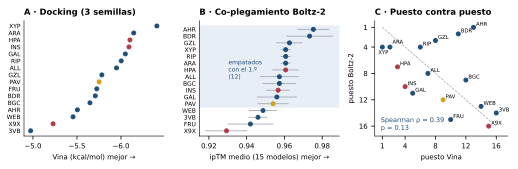

| # | Docking · AutoDock Vina | kcal/mol (media ± DE) |
|---|---|---|
| 1 | XYP β-D-xilopiranosa | −6.408 ± 0.008 |
| 2 | ARA α-L-arabinopiranosa | −6.145 ± 0.012 |
| 3 | HPA hipoxantina señuelo | −6.102 ± 0.004 |
| 4 | INS mio-inositol señuelo | −6.091 ± 0.004 |
| 5 | GAL β-D-galactopiranosa | −6.049 ± 0.011 |
| 6 | RIP β-D-ribopiranosa | −6.003 ± 0.005 |
| 7 | ALL β-D-alopiranosa | −5.949 ± 0.004 |
| 8 | GZL β-D-galactofuranosa | −5.783 ± 0.008 |
| 9 | PAV D-apiosa predicción | −5.751 ± 0.011 |
| 10 | FRU β-D-fructofuranosa | −5.725 ± 0.002 |
| # | Co-plegamiento · Boltz-2 | ipTM (media ± DE) |
|---|---|---|
| 1 | AHR α-L-arabinofuranosa | 0.975 ± 0.008 |
| 2 | BDR β-D-ribofuranosa | 0.973 ± 0.012 |
| 3 | GZL β-D-galactofuranosa | 0.963 ± 0.007 |
| 4 | XYP β-D-xilopiranosa | 0.961 ± 0.003 |
| 4 | RIP β-D-ribopiranosa | 0.961 ± 0.003 |
| 4 | ARA α-L-arabinopiranosa | 0.961 ± 0.003 |
| 7 | HPA hipoxantina señuelo | 0.961 ± 0.007 |
| 8 | ALL β-D-alopiranosa | 0.957 ± 0.010 |
| 9 | BGC β-D-glucopiranosa | 0.957 ± 0.009 |
| 10 | INS mio-inositol señuelo | 0.957 ± 0.006 |
Vina: la mejor pose de cada semilla (101, 202, 303), promediada. Boltz-2: ipTM de 15 modelos (semillas 1-3 × 5 muestras), sin plantillas. Sombreado: empatado con el 1.º según el criterio de la §2. Fuera del top-10 quedan, en Vina, BDR −5.71, BGC −5.65, AHR −5.50, WEB −5.46, X9X −5.23 y 3VB −4.97; en Boltz-2, GAL 0.956 y PAV 0.954 (los dos todavía empatados con el 1.º), WEB 0.949, 3VB 0.946, FRU 0.942 y X9X 0.929.

Figura 1. (A) Puntaje de Vina ± DE entre semillas; las barras de error son más pequeñas que los puntos. (B) ipTM de Boltz-2 ± DE entre los 15 modelos; la banda marca a los 12 ligandos empatados con el primero. (C) Puesto en Vina contra puesto en Boltz-2; la diagonal indica acuerdo perfecto. Rojo: señuelos. Ámbar: predicción previa.
Criterio: dos ligandos empatan si |Δ media| < 2·√(DE₁² + DE₂²), el doble del error estándar de la diferencia (~95 %).
DE de 0.002 a 0.018 kcal/mol; rango máximo entre semillas, 0.035 (BGC). Con este piso, los 120 pares son distinguibles. El más cercano es HPA/INS: Δ = 0.011 frente a un umbral de 0.011.
Salvedad: este piso mide solo la estocasticidad de la búsqueda. El error de la función de puntaje frente a datos experimentales (~2 kcal/mol) es mayor que todo el rango del panel (1.43 kcal/mol). El ranking de Vina es preciso, pero no sabemos si es exacto.
DE del ipTM de 0.003 a 0.012; rango del panel, 0.046. Los 12 primeros empatan con el líder (AHR), y solo WEB, 3VB, FRU y X9X se separan, hacia abajo. Solo 15 de los 120 pares superan el piso. El ipTM se reporta con 2 decimales por modelo, lo que agrega ±0.005 de redondeo.
Ejemplo: AHR (0.975 ± 0.008) frente a PAV (0.954 ± 0.008): Δ = 0.021 < 0.023, empate.
| Ligando | P. Vina | P. Boltz | Δ |
|---|---|---|---|
| XYP | 1 | 4 | +3 |
| ARA | 2 | 4 | +2 |
| HPA | 3 | 7 | +4 |
| INS | 4 | 10 | +6 |
| GAL | 5 | 11 | +6 |
| RIP | 6 | 4 | −2 |
| ALL | 7 | 8 | +1 |
| GZL | 8 | 3 | −5 |
| Ligando | P. Vina | P. Boltz | Δ |
|---|---|---|---|
| PAV | 9 | 12 | +3 |
| FRU | 10 | 15 | +5 |
| BDR | 11 | 2 | −9 |
| BGC | 12 | 9 | −3 |
| AHR | 13 | 1 | −12 |
| WEB | 14 | 13 | −1 |
| X9X | 15 | 16 | +1 |
| 3VB | 16 | 14 | −2 |
ranking_score.| Etapa | Herramienta | Entrada | Resultado | Qué concluimos · qué no |
|---|---|---|---|---|
| BLAST | blastp: Swiss-Prot (local) y nr (remoto) | 362 aa | 17 aciertos RbsB, 22.6-31.5 % id, 6 ligandos distintos en el top-10; nr: 500 aciertos, 259 de Rhizobiaceae | Familia y pliegue tipo I. No el ligando: zona crepuscular, y #1 y #2 unen cosas distintas. Las anotaciones "ribose" de nr son automáticas y circulares |
| AlphaFold2 | ColabFold 1.6, sin plantillas, 5 modelos | 362 aa | pLDDT 92.2, pTM 0.877; MSA de 1841; dos lóbulos, PAE entre ellos 3.0 Å | Modelo confiable, hendidura cerrada. No la función ni la conformación con ligando |
| Péptido señal | n/h/c, pLDDT, BLAST | modelo + secuencia | corte 27/28 | Cadena madura de 335 aa (ver §6) |
| Foldseek | foldseek, PDB completo (local) | madura 1-335 | 2811 aciertos; TM 0.76-0.92 con solo 17-25 % id; 150 entradas, 83 con ligando | Parientes que BLAST no ve. No el ligando: C₅H₁₀O₅ con 11 códigos, C₆H₁₂O₆ con 10 |
| Ligandos | CCD _ideal.sdf + Open Babel | 16 códigos | fórmula = ficha, con H, no planos (HPA es aromática) | Panel listo. No cubre todos los anómeros ni tautómeros |
| Docking | Vina 1.2, caja de 26 Å, exh. 32, 3 semillas | receptor + 16 | −6.41 a −4.97 kcal/mol; poses en el sitio | Reproducible. No es afinidad: el error del puntaje es mayor que el rango |
| Co-plegamiento | Boltz-2, sin plantillas, 3 × 5 | madura + CCD | ipTM medio 0.93-0.98; 12 de 16 empatados | Todos caben en el sitio. No discrimina entre azúcares. Artefacto O1 |
De las 150 entradas únicas de Foldseek, 67 no tienen ligando (45 %). Contamos los ligandos de las 83 restantes, después de descartar iones, crioprotectores y tampones. El panel siguió cuatro criterios explícitos:
| Criterio | Ligandos (entradas PDB de origen) | Qué pone a prueba |
|---|---|---|
| (a) Frecuencia | BGC ×13 (2GBP, 3GBP, 2IPL…), RIP ×9 (1DBP, 2IOY…), GAL ×7 (2RJO, 8ABP…), XYP ×4 (3C6Q, 5XSS…) | lo más observado en la familia |
| (b) Convergencia BLAST + Foldseek | PAV ×4 (3EJW, 3T95, 4PZ0, 6DSP) | la única función presente en Swiss-Prot en el mismo género, Rhizobium |
| (c) Misma fórmula, otra geometría | ARA (1BAP) / AHR (5OCP); RIP / BDR (3KSM); GAL / GZL (2VK2); ALL (5DTE) / WEB (8WLB); BGC / FRU (2X7X) | anillo de 6 frente a 5 · aldosa frente a cetosa |
| (d) Señuelos | INS (4IRX), X9X (4WT7), HPA (1JFT) | ciclitol · poliol acíclico · base púrica |
Además incluimos 3VB (4RSM, del panel del tutorial). El panel tiene 6 ligandos C₅H₁₀O₅ y 7 C₆H₁₂O₆.
Predicción (con la evidencia de las etapas 1-4): D-apiosa (PAV); segunda opción, ribosa. El acierto #1 de BLAST (ribosa, 28.5 %) está en zona crepuscular, y el #2 (31.5 %) une treitol. La apiosa es el único ligando con evidencia en Swiss-Prot (#8-#11, dos de ellos de R. rhizogenes y R. etli) y en Foldseek, y encaja con la ecología: Rhizobium vive en las raíces y la apiosa es un azúcar de la pared celular vegetal. Declaración: vimos los scores de Vina antes de escribirla, pero no los usamos para formularla. Resultado: 9.º en Vina y 12.º en Boltz-2, dentro del empate. No se confirma ni se descarta.
MKRRT (+3) · h FLQTGSALIAAGAFGIP (Kyte-Doolittle +1.27, máximo +2.24) · c GILRA, que termina en Ala. La hidropatía cae en el residuo 28.Corte después de A27. Recortamos el PDB (opción b) en lugar de volver a predecir. Costo que declaramos: el resto se plegó en presencia del péptido. Numeración madura 1-335, con D28 del precursor = 1. Nota: al modelo de respaldo que se reparte (TeuB_modelo_apo.pdb) le falta una Arg en la posición 256 (WMRRW → WMRW), así que tiene 334 residuos y su "Cys268" es C269. Por eso recalculamos el centro de la caja en el modelo propio: (3.38, −3.17, 0.79).